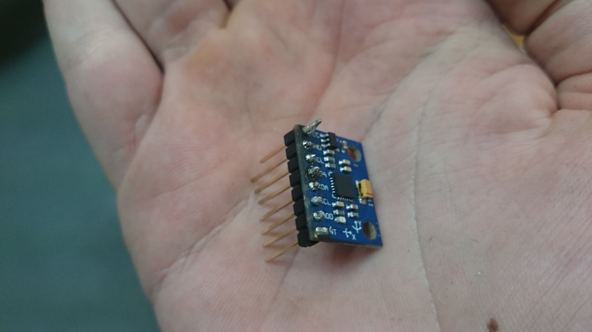

La dernière fois nous avons vu comment nous allions gérer la communication entre un drone et le serveur. En parallèle, un membre du groupe de projet travaillait sur le composant qui va nous servir à stabiliser le vol du drone. Nous allons, justement présenter ce composant par le biais de cet article.
Le gyroscope, crée par Foucault en 1852 est un appareil constitué d'un rotor, associé à trois cercles extérieurs. Ces cercles extérieurs sont reliés entre eux de telle façon que le rotor ait trois degrés de liberté par rapport au dernier cercle extérieur (soit la matrice degrée de liberté = {0, 0, 0, Rx, Ry, Rz}/cercle exterieur).
Grâce à cette caractéristique, le gyroscope profite d'un principe physique appelé principe de conservation du moment cinétique, ou effet gyroscopique. Cet effet implique que lorsqu'on applique une force sur un solide en rotation (le rotor dans notre cas), il se crée une force perpendiculaire au sens de rotation. Dans le cas du gyroscope, du fait de la présence des trois degrés de liberté, cette force ainsi que la force initiatrice du mouvement seront alors absorbées par les anneaux extérieurs. Par conséquent, le rotor ne subira aucune de ces force et restera fixe par rapport aux repère galiléen. En étudiant le mouvement des anneaux extérieurs, il sera alors possible de connaitre le déplacement du gyroscope par rapport au rotor, soit par rapport au repère galiléen.
Les gyroscopes sont des capteurs couramment utilisés dans les appareils en mouvement. En effet, du fait de leur capacité à fournir des informations fiables sur l'orientation de l'objet, ils sont particulièrement utiles afin de connaitre l'inclinaison d'appareil que ce soit pour des manoeuvres (par exemple, tourner pour un avion) ou se stabiliser (en cherchant à minimiser cette inclinaison).
C'est dans ce but qu'un gyroscope a été introduit dans le montage de notre drone.
Le gyroscope choisi pour intégrer notre drone est un MPU6050. Ce type de gyroscope, particulièrement répandu dans l'industrie, présente l'avantage d'être compatible avec notre montage, d'être relativement abordable financièrement et de posséder un accéléromètre. Cet accéléromètre étant destiné à nous fournir des informations sur le déplacement et la position de notre drone. Mais nous reviendrons sur ce point dans un prochain article.
Ce capteur est constitué de trois axes (les axes X et Y étant indiqués sur la carte, l'axe Z étant perpendiculaire à la plaque).
Puisqu'il faut que l'effet gyroscopique puisse s'appliquer sur le gyroscope, l'ensemble des angles pouvant être mesurés appartiennent à [-80, 80]. Passé cette valeur, la gravité serait trop proche de la composante crée par l'effet gyroscopique, ce qui fausserait les mesures.
Les mesures de rotations autour de l'axe Z varient quant à eux entre -180° et 180°.
Afin d'utiliser le MPU6050 dans notre montage, nous nous sommes largement inspiré des travaux de Jeff Rowberg qui propose un code permettant de mesurer les valeurs obtenues par les capteurs.
Fort de ces informations, une analyse est effectuée afin de définir l'inclinaison de notre drone. Il convient ensuite de piloter les moteurs afin d'effectue le traitement adéquat. Puisque notre drone à pour but de mesurer une topographie, il est nécessaire d'obtenir un drone en vol stationnaire, soit parallèle au sol. Les moteurs sont donc gouvernés par le gyroscope afin se stabiliser.